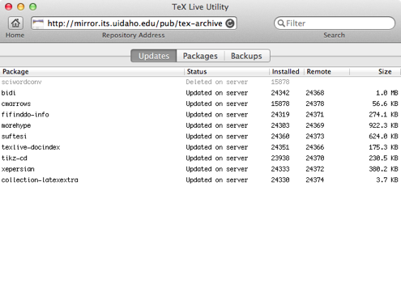

Update
The primary usage of TeX Live Utility is updating a TeX Live installation with newer packages from CTAN.
When you first launch TeX Live Utility, you are greeted with the update window:

The Installed and Remote columns show the TeX Live version number of the package currently on your system and the version on the mirror, respectively. The Size column shows the on-disk size of the package.
To update, see the Actions menu of the main menu bar. You can update individual packages or all packages.
You can also use a contextual menu (right-click or control-click selected items in the list).
Note: updating all packages will add and remove packages on your system to match those on the server. If you do not want packages automatically removed, see the Preferences section.